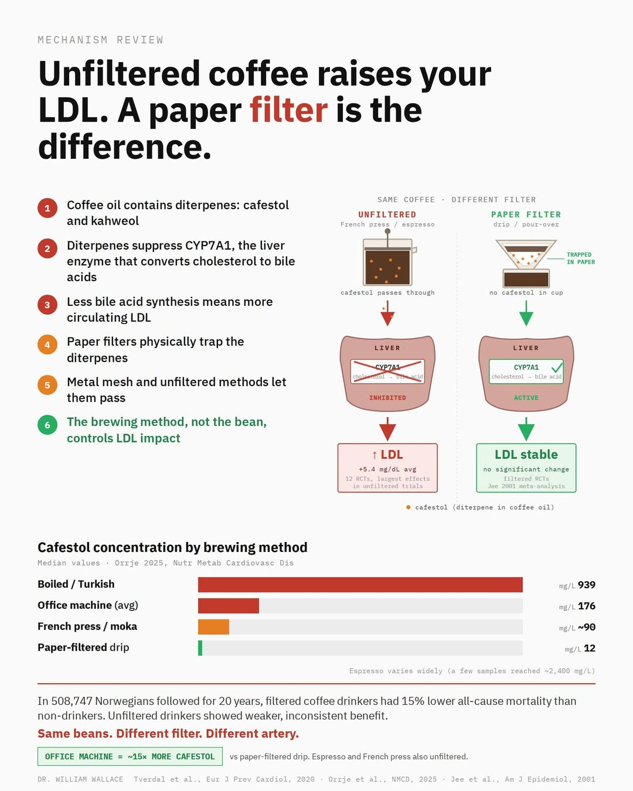

Filtered coffee is probably healthier than unfiltered.
The oily compounds in unfiltered coffee (diterpines) raise LDL and might increase cancer risk in high amounts.
Louis notes that oily compounds called diterpenes in unfiltered coffee raise LDL and might increase cancer risk in high amounts, so filtered coffee is probably better. He links a FoundMyFitness video on coffee.
Filtered coffee is probably healthier than unfiltered.
The oily compounds in unfiltered coffee (diterpines) raise LDL and might increase cancer risk in high amounts.

Coffee's diterpenes cafestol and kahweol raise LDL. In a 24-week randomized trial of 46 healthy adults drinking about 0.9 L/day, French-press coffee raised LDL about 0.26 mmol/L (~10 mg/dL) more than paper-filtered coffee. French press, boiled, Turkish, moka and espresso keep more diterpenes; paper filters remove most.

Louis shares an explanation of how coffee diterpenes suppress CYP7A1 via FXR, reducing LDL clearance, replicated across RCTs and pooled in a meta-analysis.

Louis shares a graph of foods' LDL effects serving-for-serving against a typical Western diet baseline, e.g. almonds lower LDL and sugar raises it. Excess calories raise LDL regardless.

A review of coffee and human aging reports that regular moderate coffee consumption is associated with lower all-cause mortality and fewer cardiovascular, stroke and cancer cases. Coffee and its components (caffeine, chlorogenic acids) appear to support stress adaptation and aging mechanisms.
Louis argues that, while organic is fine if affordable, eating conventionally grown fruit and vegetables is much better than skipping them. He cites Ames's PNAS papers showing 99.99% by weight of dietary pesticides are plants' own natural defense chemicals, and that natural carcinogens in produce far exceed synthetic residues.

Louis shares a pooled analysis from the INHANCE consortium finding coffee and tea intake linked to lower head and neck cancer, suggesting hot coffee does not raise throat cancer risk. He calls for RCTs of coffee extract.
 ▶
▶